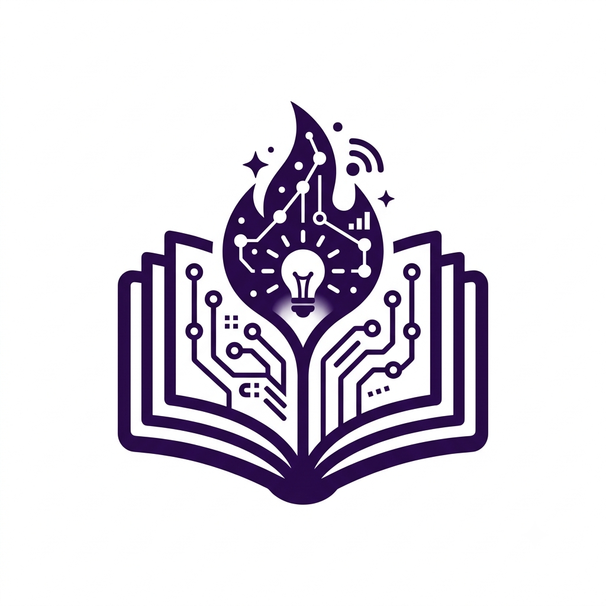
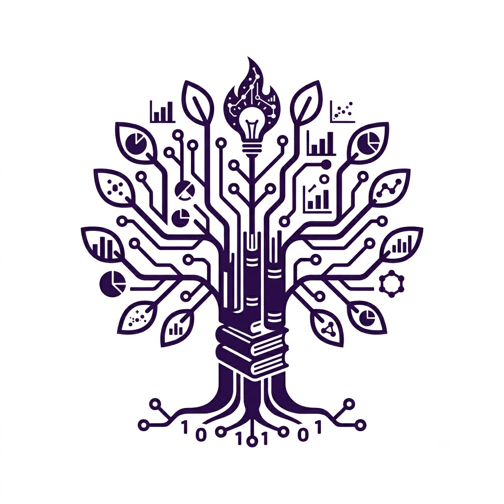

Meu primeiro post
Por: Leidiany
Boas-vindas ao meu novo blog! Aqui vou compartilhar dicas de programacao curiosidades da area da tecnologia.
Vou compartilhar conhecimentos sobre tecnologia e programacao

Por: Leidiany
Boas-vindas ao meu novo blog! Aqui vou compartilhar dicas de programacao curiosidades da area da tecnologia.

Por: Leidiany
Estima-se que 90% de todos os dados existentes no mundo hoje foram gerados apenas nos últimos dois anos. Vivemos em uma verdadeira exploração de informações que não para de crescer.
Por: Leidiany
Antes do desing ergonômico e das luzes RGB, o primeiro mouse do mundo foi construído de madeira!
Foi criado por Douglas Engelbart em 1964, ele tinha o formato de uma caixa quadrada e apenas um botão.
Por: Leidiany
O nome é uma homenagem ao rei viking Harald Blatand Gormsson, que unificou tribos da
Escandinávia. Seu apelido era Harald "Bluetooth" porque seus dentes eram tão podres que
tinham uma coloração azul escura.